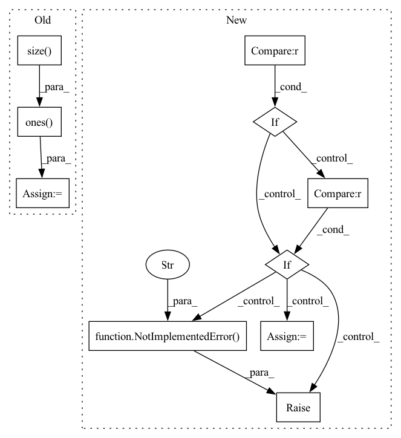

Pattern ID :3113

Before Change
mask = Masks.get_ff_mask(height, width)
mask_all.append(mask)
mask = torch.from_numpy(np.asarray(mask_all)).unsqueeze(1).float()
ones = torch.ones(x.size(0), 1, x.size(2), x.size(3))
mask = ones * mask
if x.is_cuda:
mask = mask.cuda()
result = x * (1. - mask)
After Change
if x.is_cuda:
mask = mask.cuda()
if config["mask_type"] == "hole":
result = x * (1. - mask)
elif config["mask_type"] == "mosaic":
// TODO: Matching the mosaic patch size and the mask size
mosaic_unit_size = config["mosaic_unit_size"]
downsampled_image = F.interpolate(x, scale_factor=1. / mosaic_unit_size, mode="nearest")
upsampled_image = F.interpolate(downsampled_image, size=(height, width), mode="nearest")
result = upsampled_image * mask + x * (1. - mask)
else:
raise NotImplementedError("Not implemented mask type.")
return result, mask
In pattern: SUPERPATTERN
Frequency: 3
Non-data size: 10
Instances
Fragment ID: 11954032
Project Name: sayednadim/global-and-local-attention-based-free-form-image-inpainting
Commit Name: aaa17ed332dc95db0f5900a43be179e26569b50c
Time: 2020-08-16
Author: smnadimuddin@gmail.com
File Name: model/mask.py
M Class Name: AnonimousClass
N Class Name: AnonimousClass
M Method Name: mask_image(2)
N Method Name: mask_image(2)
M Parent Class:
N Parent Class:
M File Name: model/mask.py
N File Name: model/mask.py
M Start Line: 40
M End Line: 49
N Start Line: 56
N End Line: 72
'>
Before Change
super(BasicBlock, self).__init__()
self.conv1 = nn.Conv2d(in_planes, planes, kernel_size=3, stride=stride, padding=1, bias=False)
self.mask1 = nn.Conv2d(in_planes, planes, kernel_size=3, stride=stride, padding=1, bias=False)
self.mask1.weight.data = torch.ones(self.mask1.weight.size())
self.bn1 = nn.BatchNorm2d(planes)
self.conv2 = nn.Conv2d(planes, planes, kernel_size=3, stride=1, padding=1, bias=False)
self.mask2 = nn.Conv2d(planes, planes, kernel_size=3, stride=1, padding=1, bias=False)
After Change
super(BasicBlock, self).__init__()
if norm_layer is None:
norm_layer = nn.BatchNorm2d
if groups != 1 or base_width != 64:
raise ValueError("BasicBlock only supports groups=1 and base_width=64")
if dilation > 1:
raise NotImplementedError("Dilation > 1 not supported in BasicBlock")
// Both self.conv1 and self.downsample layers downsample the input when stride != 1
self.conv1 = conv3x3(inplanes, planes, stride)
self.bn1 = norm_layer(planes)
self.relu = nn.ReLU(inplace=True)
self.conv2 = conv3x3(planes, planes)
self.bn2 = norm_layer(planes)
self.downsample = downsample
self.stride = stride
def forward(self, x):
identity = x
'>
Fragment ID: 11954033
Project Name: incheon-cho/dynamic_model_pruning_with_feedback
Commit Name: 12bd228dc14e0c422c262bcbc1b81cb435e05a4d
Time: 2020-09-06
Author: dlscjs5362@gmail.com
File Name: models/resnet.py
M Class Name: BasicBlock
N Class Name: BasicBlock
M Method Name: __init__(9)
N Method Name: __init__(4)
M Parent Class: nn.Module
N Parent Class: nn.Module
M File Name: models/resnet.py
N File Name: models/resnet.py
M Start Line: 31
M End Line: 47
N Start Line: 24
N End Line: 40
'>
Before Change
def mask_image(x, config):
height, width, _ = config["image_shape"]
mask = torch.ones(x.size(0), 1, x.size(2), x.size(3))
temp = torch.ones(x.size(0), 1, x.size(2), x.size(3))
for i in range(x.size(0)):
mask_temp = Masks.get_ff_mask(height, width)
mask_temp = torch.from_numpy(mask_temp)
mask[i,:,:,:] = temp[i,:,:,:] * mask_temp
if x.is_cuda:
mask = mask.cuda()
result = x * (1. - mask)
After Change
if x.is_cuda:
mask = mask.cuda()
if config["mask_type"] == "hole":
result = x * (1. - mask)
elif config["mask_type"] == "mosaic":
// TODO: Matching the mosaic patch size and the mask size
mosaic_unit_size = config["mosaic_unit_size"]
downsampled_image = F.interpolate(x, scale_factor=1. / mosaic_unit_size, mode="nearest")
upsampled_image = F.interpolate(downsampled_image, size=(height, width), mode="nearest")
result = upsampled_image * mask + x * (1. - mask)
else:
raise NotImplementedError("Not implemented mask type.")
return result, mask
'>
Fragment ID: 11954026
Project Name: sayednadim/global-and-local-attention-based-free-form-image-inpainting
Commit Name: 2e453ae0b658395a88acb8db67115db86d9274ea
Time: 2020-08-16
Author: smnadimuddin@gmail.com
File Name: model/mask.py
M Class Name: AnonimousClass
N Class Name: AnonimousClass
M Method Name: mask_image(2)
N Method Name: mask_image(2)
M Parent Class:
N Parent Class:
M File Name: model/mask.py
N File Name: model/mask.py
M Start Line: 40
M End Line: 48
N Start Line: 56
N End Line: 72